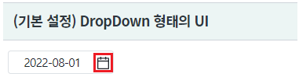
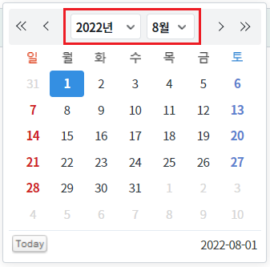
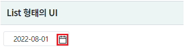
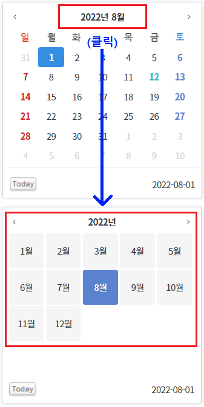
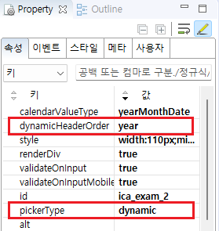
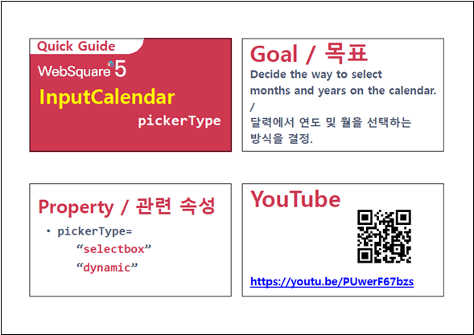

InputCalendar의 캘린더의 연도와 월을 선택하는 UI를 지정하는 예제입니다. select : (기본 설정) 연도와 월 선택하는 UI를 drop down 형태로 구성 dynamic : 연도와 월을 선택하는 UI를 list 형태로 구성
[기본 설정] 연도와 월 선택하는 UI를 drop down 형태로 구성
연도와 월을 선택하는 UI를 list 형태로 구성
영역 [(기본 설정) DropDown 형태의 UI]의 InputCalendar의 캘린더 아이콘을 클릭합니다.
(초기 값은 예제 파일이 실행된 해의 8월 1일로 설정되어있습니다)
[브라우저(Chrome) 실행 예시 - 캘린더 아이콘]

연도와 월을 선택하는 UI가 DropDown 형태로 구성되었음을 확인합니다.
[브라우저(Chrome) 실행 예시 - 캘린더]

영역 [List 형태의 UI]의 InputCalendar의 캘린더 아이콘을 클릭합니다.
(초기 값은 예제 파일이 실행된 해의 8월 1일로 설정되어있습니다)
[브라우저(Chrome) 실행 예시 - 캘린더 아이콘]

연도와 월을 선택하는 UI가 List 형태로 구성되었음을 확인합니다.
[브라우저(Chrome) 실행 예시 - 캘린더]

속성을 지정합니다.
[필수] pickerType="dynamic" //연도와 월을 선택하는 UI을 지정합니다. selectbox없이 연도나 월을 리스트 형태로 선택.
[필수] dynamicHeaderOrder="year" //pickerType="dynamic"인 경우 헤더 부분의 헤더 부분에 label을 year를 먼저 출력.
그림 1.웹스퀘어5 SP5 스튜디오의 Property View(속성창) 예시

[소스 코드 예시]
<!-- inputCalendar 의 소스 본문 예시 --> <w2:inputCalendar pickerType="dynamic" dynamicHeaderOrder="year" calendarValueType="yearMonthDate" id="ica_exam_2"> </w2:inputCalendar>
pickerType
dynamicHeaderOrder
[웹스퀘어5 SP5 개발 가이드] InputCalendar
링크 : https://docs1.inswave.com/sp5_user_guide/8df43d1f59fab704#579244ff7483b50c
[웹스퀘어5 SP5 개발 가이드] InputCalendar - 연도 및 월 선택
링크 : https://docs1.inswave.com/sp5_user_guide/8df43d1f59fab704#bd068893ed4bbf34
InputCalendar - 연도 및 월 선택
링크 : https://youtu.be/PUwerF67bzs
